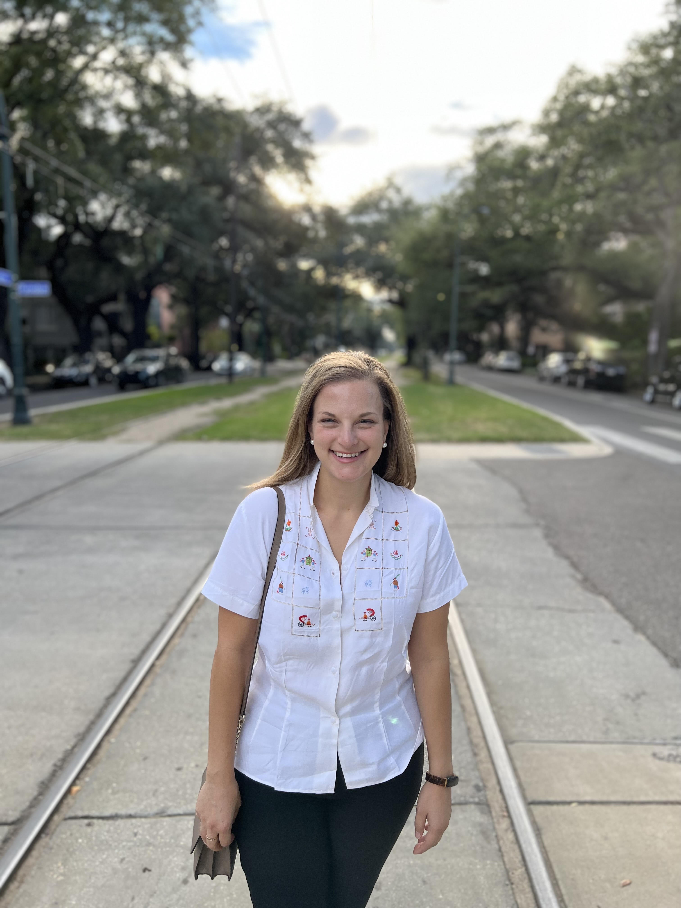

By Theo Armour and Claire Wilkerson Nuccio

Recently, Theo sat down with Claire Wilkerson Nuccio for a conversation that bridged professional expertise with personal connection. As a Speech Therapist with EmpowerMe, Claire has become a familiar presence at Heritage, where she provides regular speech therapy services that touch the lives of residents daily.
But Claire's impact extends beyond her regular rounds. She's currently working one-on-one with Theo, helping him develop better communication habits—a partnership that has sparked something more. Their sessions have evolved into broader discussions about possibility and progress, exploring how Heritage residents might harness modern technology to enhance their daily lives and independence.
The interview that follows captures their exchange, with Theo's questions in bold and Claire's thoughtful responses illuminating both her clinical insights and her vision for what's possible.
Most of my treatments with residents involve swallowing problems and making modifications to the swallow process. My other main area of treatment at this facility is for cognition and communication for those who have noticed a decline in their abilities to remember information, interpret information, and for word finding.
Sessions can range from 1-3 sessions a week and can vary from 30-60 minutes. Scheduling usually depends on both patient and therapist schedule and the resident's particular levels and needs.
We focus a lot on compensatory strategies that can support and assist with particular deficits as well as use of external tools and environmental modifications. Depending on the impairment, certain exercises can be completed for rehab.
Family, friends, and staff play a huge role in recovery (not just with speech therapy) because they are able to provide support, encouragement, but most importantly, are able to provide assistance with carryover of recommendations made by the therapist in order to have continued practice outside of the therapy sessions. I also work closely with the PT and OT to discuss a more comprehensive care plan.
There are therapy apps on iPads and iPhones, as well as desktops, that can provide structured exercises and tasks for continued therapy practice. However, mostly we look at features within the device to accommodate certain needs and make life (communication specifically) easier. These can include reminders, voice-to-text, recorded messages, predictive text, calendar features, etc.
My undergraduate degree was completed at Louisiana State University and my graduate degree was completed at University of Louisiana at Lafayette. I was originally pre-med in my first two years of undergraduate schooling but wasn't feeling inspired by it. I ended up taking a communication disorders elective and fell in love with the field. It combines medical treatment but with more personalized care with treating patients.
I have been a speech therapist for almost 13 years. I have spent my schooling and post-graduate work specializing in adult rehabilitation with an added specialization in dysphagia, aphasia, and dementia. I have also worked in all medical settings: inpatient hospital (ER, ICU, post operative), acute rehab, post-acute rehab, home health, private pay, outpatient clinic, SNF, and senior living facilities.
Speech therapy is the grey area of therapy in that it covers a lot of different aspects of daily living and is the "under the surface" rehab. I like to say it covers everything from the lungs up (breathing, swallowing, voice, speech intelligibility, language skills, cognition, etc).
Remembering names of people and places, staying on topic, conversation skills, remembering important information, processing/comprehending new information, and swallow difficulties.
The neuro-musculature abilities change, and unfortunately, progress in the decline. Like with most aging, everything becomes weaker and slower.
Allow for patience and time. The best thing is to not guess what they want to say but to support them in finding the idea they want to communicate.
If there is a noted change in how you are living your daily life (example: you notice tasks and basic functioning is not your usual self).
There is nothing shameful in acknowledging there is change with any part of aging. It happens in some shape or form to everyone. The goal of my therapy is to make you stand out less and blend in more with your peers.
Communication is at the very center of daily life and all that is meaningful to us. When we are not able to effectively communicate our wants, needs, thoughts, desires to those we interact with, it can be very isolating. The domino effect of these changes spills over into other aspects of daily living and maintaining relationships with others.
Residents can always come to the office to schedule a screening first to see if they need an evaluation and further treatment. This is more of a "get to know you" and general assessment of any impairments that are reported by the resident or noted by the therapist. A more comprehensive evaluation would then follow after there is an order from an MD, NP, or PA and insurance has approved therapy coverage.
I am an avid traveler and take many trips throughout the year. My other hobbies include cooking, long strolls throughout the city, and vintage shopping.